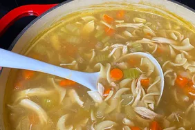

Home Lasagna
Baked Ziti
Chili Mac
Chicken Noodle Soup
CHICKEN NOODLE SOUP

Indulgent and soulful soup
Ingredients
- 13 c. chicken stock
- 1/4 c. dry vermouth
- 1/4 c. butter
- 1 c. half and half
- 1/2 lb. (4 c.) med. egg noodles
- 3/4 c. flour
- 1 1/4 c. water
- 2 cups mirepoix
- 2 c. diced, cooked chicken
- Salt and pepper to taste
Directions
- Combine 1 cup of stock, vermouth and butter. Bring to a boil and boil rapidly until mixture is reduced to 1/4 cup (syrupy consistency). Stir in half and half; set aside.
- Sauté mirepoix, set aside.
- Heat remaining stock to a boil. Add noodles and cook until tender. Blend flour with water until smooth. Stir into noodles. Stir until mixture boils 1 or 2 minutes. Add cream mixture, mirepoix, and chicken. Season with salt and pepper. Makes 15 cups.